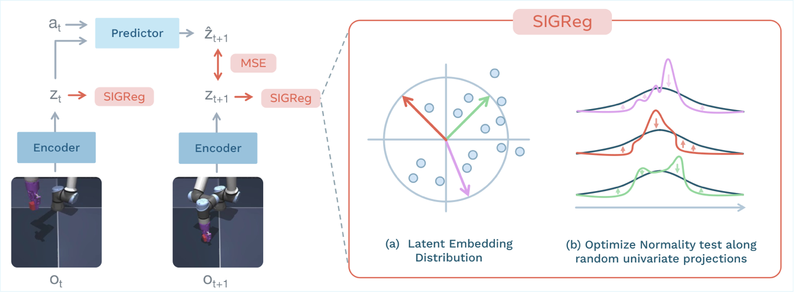
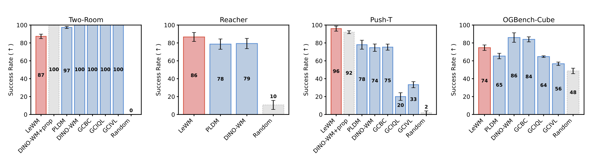
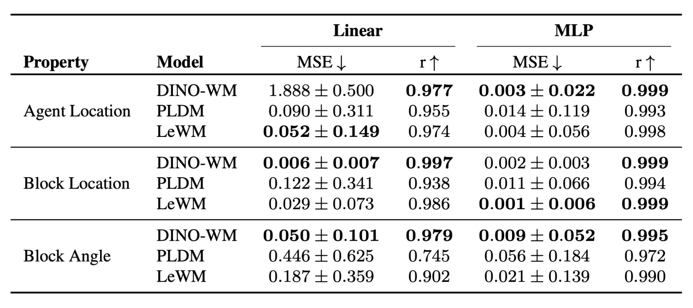
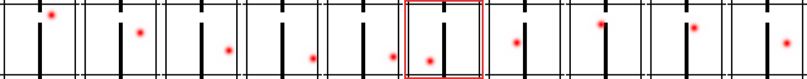
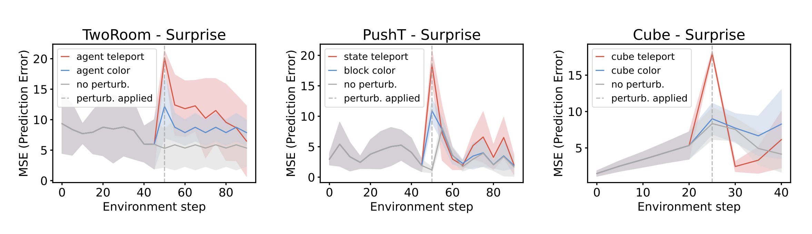
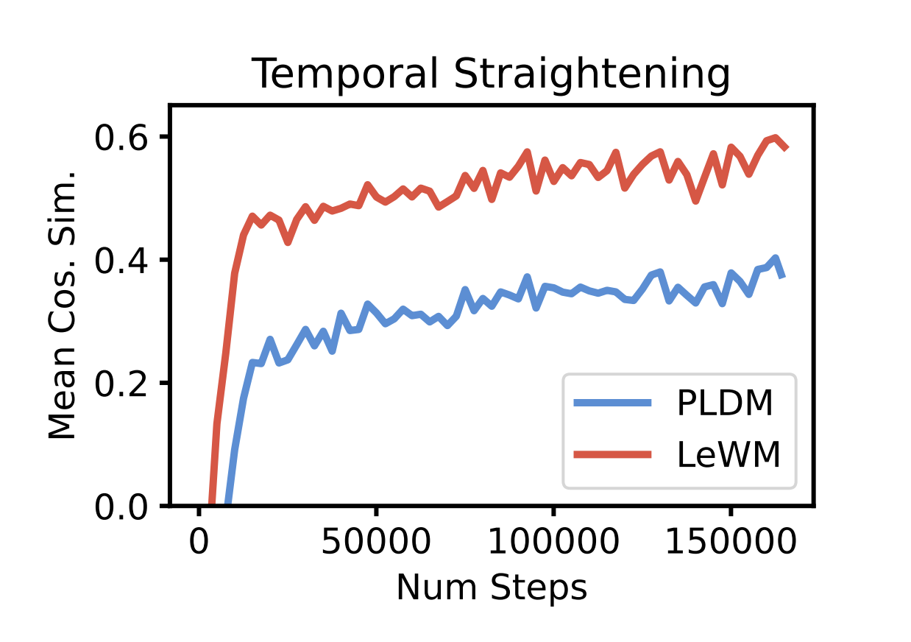

LeWorldModel: Stable End-to-End Joint-Embedding Predictive Architecture from Pixels
- Can a JEPA world model learn its encoder and its predictor together, from raw pixels?
- Can it do that without a frozen pretrained encoder, an EMA teacher or a pile of losses?
- How small and how fast can such a world model be?
LeWorldModel (Maes, Le Lidec, Scieur, LeCun and Balestriero, March 2026), LeWM for short, answers all three. It takes LeJEPA's SIGReg and uses it to train a world model end-to-end, from pixels, on a single GPU.
Why end-to-end was hard
A world model for planning needs two parts: an encoder that turns an image into a latent state, and a predictor that says where an action takes that state. Training both together, from pixels, tends to collapse: the easiest way to predict the next state perfectly is to make every state the same.
Earlier world models got around this in one of two ways:
- Freeze the encoder. Take an encoder already trained on other data, keep it fixed, and learn only the predictor. Training is stable, but the encoder was built for a different job, and whatever it throws away the world model can never get back.
- Add more losses. Train both parts together, and add extra loss terms whose only job is to stop the collapse. It works, but every extra term has its own weight to tune, and one bad setting can quietly break the run.
LeWM trains both parts together with just one extra term and one weight.
How it works

Five pieces make up the method, from the model to how it plans:
A ViT-Tiny with about 5M parameters: 12 layers, 3 attention heads, width 192, patch size 14. It reads a 224×224 frame and returns one 192-dimensional vector per frame, not a grid of patch features.
That vector is the [CLS] token of the last layer, passed through a one-layer MLP with BatchNorm. Why the extra step? The ViT ends with a LayerNorm, which does two things to every output vector:
- Centring: it subtracts the vector's mean across its 192 features, so every vector is orthogonal to the all-ones direction, and along that direction there is no variance at all.
- Rescaling: it divides by the vector's spread, so every vector has roughly the same length.
A cloud of such vectors has one dead direction and sits on a sphere. It can never be an isotropic Gaussian, so SIGReg would chase a target it cannot reach. BatchNorm normalises the other way round: each feature across the batch, not each vector across its features. That leaves no dead direction and no fixed length. It also starts every feature at mean 0 and variance 1, and leaves each feature's mean and scale as just two learnable numbers, which is close to what SIGReg asks for.
"At first I was surprised they did not simply skip the final LayerNorm and use a plain linear layer. Reviewing their code, it is there: the projector has two more layers, Linear (192 → 2048) → BatchNorm → GELU → Linear (2048 → 192). The last one is plain linear, so its output is free for SIGReg to shape, and the BatchNorm in the hidden layer becomes just a design choice, I guess."
A small transformer with about 10M parameters: 6 layers, 16 attention heads and 10% dropout.
Input. $N$ tokens, one per frame for the last $N$ frames ($N = 3$ on PushT and OGBench-Cube, $N = 1$ on TwoRoom). Each token is that frame's 192-dimensional latent from the encoder, so the input has shape $N \times 192$.
The actions are not extra tokens. A small MLP first turns each frame's action block into a 192-dimensional vector, which conditions that frame's token through adaptive layer norm (AdaLN): in every layer, the action sets the scale and shift of the token's normalisation. The AdaLN weights start at zero, so the action's influence grows gradually during training.
Each action is one continuous vector per frame, shape $N \times A$. Frames are 5 environment steps apart, so this vector is a block of the 5 low-level actions taken in between. On PushT a low-level action is a 2D move, so a block has $A = 5 \times 2 = 10$ numbers; on OGBench-Cube a low-level action has 5 numbers (arm move, yaw, gripper), so $A = 25$.
Output. Shape $N \times 192$: for each input token, a guess of the next frame's latent, passed through the same kind of projection as the encoder's. Causal masking makes sure the guess for frame $t$ only uses frames up to $t$.
In training, all guesses come out in one pass and are compared with the encoder's latents of the real next frames. In planning, the predictor runs step by step: each guess is added as the newest token and the oldest one drops out, so the predictor always sees the last $N$ tokens, together with their actions.
Here $z_{t+1}$ is the next frame's latent, $\hat{z}_{t+1}$ the predictor's guess, and $Z$ a batch of latents. The first term asks the predictor to land on the next frame's latent. The second is SIGReg from LeJEPA: project the latents onto 1024 random directions and push each projection toward a standard normal. One weight, $\lambda = 0.1$; the number of projections barely matters.
No EMA, no stop-gradient, no frozen encoder, no reconstruction, no reward prediction. Encoder and predictor train together, and collapse is ruled out because a constant latent cannot look Gaussian.
LeWorldModel learns only from recorded trajectories of observations and actions: no annotations, no reward signals and no task specifications. Four offline datasets:
| Environment | Type | Episodes | Avg length |
|---|---|---|---|
| TwoRoom | 2D navigation | 10,000 | 92 |
| PushT | 2D manipulation | 20,000 | 196 |
| OGBench-Cube | 3D manipulation | 10,000 | 200 |
| Reacher | 2D arm control | 10,000 | 200 |
Each training sample is a short clip cut from an episode: 4 frames, 5 environment steps apart, with the actions between them. The encoder turns all 4 into latents; the predictor sees the first 3 and guesses the next frame's latent for each. Batches of 128 clips, 10 epochs. Each environment gets its own model, about 15M parameters, which trains on a single GPU in a few hours.
To reach a goal image, LeWM encodes the current frame and the goal, then searches for actions with the cross-entropy method: sample 300 action sequences, roll each one forward 5 steps (25 environment steps) with the predictor, keep the 30 whose final latent is closest to the goal, refit, and repeat: 30 times on PushT, 10 elsewhere. It executes the whole 5-step plan, then replans.
Results
The headline is speed. A whole frame is one vector, so rolling the predictor forward is cheap, and planning evaluates thousands of rollouts per decision:
On success rate, LeWM is competitive rather than dominant:

The TwoRoom result is the interesting one, because it is the simplest environment. The authors' explanation: its data has very little diversity and a low intrinsic dimension, so the encoder struggles to fill a high-dimensional isotropic Gaussian, and the latent space ends up less structured. It is a limit of SIGReg in very simple worlds, and a nice echo of the question from the LeJEPA post: what if the right distribution depends on the task?
Does the latent space understand physics?
Planning success shows that the model works, but not what it has learned. So the paper looks inside the latent space and asks whether it has picked up the physics of the scene, even though nothing in training mentions physics. It does this in three ways.
A probe is a small model trained on top of the frozen latents to predict one quantity, for example where the block is. If even a simple probe can read the quantity out, the latent must contain it.
On PushT, the authors probe for three quantities the world model was never given: the agent's position, the block's position and the block's angle. They use two probes, a linear one and a small MLP. Lower error means the quantity is easier to read:

The positions come out well even with the linear probe. The angle is harder: the linear probe struggles, but the MLP reads it well, so the angle is there, just not in a linear form. On every quantity LeWM's latents are easier to read than PLDM's, and competitive with DINO-WM's, whose encoder was pretrained on about 124M images.
Babies look longer at events that break physics, such as an object vanishing. The violation-of-expectation test does the same for models: the model's surprise is its prediction error, how far its guess for the next frame lands from what actually happens.
The model watches three kinds of trajectories in TwoRoom, PushT and OGBench-Cube:
- normal ones;
- ones where an object suddenly changes colour: it looks different, but no physics is broken;
- ones where an object suddenly teleports: physics is broken.

A teleport makes a significant spike in surprise in all three environments. A colour change gives only a small rise. So the model reacts to broken physics, not just to anything that looks different.

As a video plays, its latent moves through the latent space and traces a path. A hypothesis from neuroscience says that good representations make these paths straighter, so that the future can be predicted by simply continuing in the same direction. The authors measure straightness as the cosine similarity between consecutive steps of the path: 1 means the path keeps exactly the same direction.
On PushT, LeWM's paths get steadily straighter during training, although no loss asks for it. They end up straighter than those of PLDM, an earlier end-to-end world model that has a loss term just for smoothness.

Conclusion
LeWM shows that a JEPA world model can be trained stably end-to-end from pixels: an encoder maps each image to a latent, a predictor forecasts the next latent given an action, and pushing the latents toward an isotropic Gaussian is enough to prevent collapse. Across continuous control tasks it is better than earlier approaches in data efficiency, planning time, training time and stability, while staying competitive in task success.
The authors name five limitations, each pointing to future work:
- Short horizons. Planning only looks a few steps ahead, which motivates hierarchical world models for long-horizon reasoning.
- Data coverage. The method learns only from offline datasets, so they need to cover the environment well.
- Simple environments. In low-diversity, low-dimensional worlds like TwoRoom, a high-dimensional Gaussian is hard to match, so SIGReg works less well.
- Domain-specific data. Pretraining on large, diverse video datasets could give stronger priors and reduce the need for data from each environment.
- Action labels. Training needs the actions; inverse dynamics modelling could remove that dependence.
Summary
LeWM is LeJEPA's idea applied to world models: